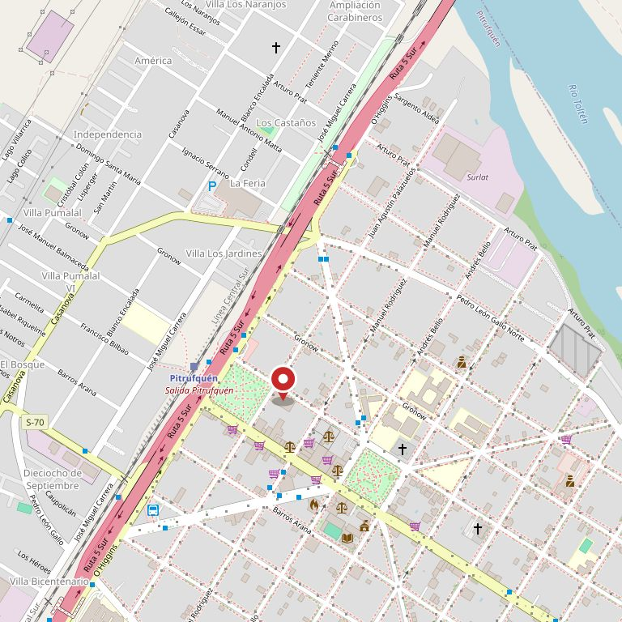

Pitrufquén · Balmaceda 337
Lo que usted diga camino al dentista le va a durar treinta años.
El miedo al dentista casi siempre se instala en la primera visita de la infancia, y casi siempre sin querer. Acá está qué decir, qué no decir, y qué le toca a cada edad — incluida la muela que a los seis años muchos papás creen que es de leche.
5 reseñas con nota 5,0 en Google · clínica dental en Pitrufquén
Antes de salir de la casa
Llevar a un niño por primera vez
Seis cosas que dependen enteramente de los papás y que definen si ese niño va a ser un adulto que se atiende o uno que lleva diez años sin ir.
Sí
- Llévelo antes de que le duela algo. Si la primera vez es por dolor, el dentista queda asociado al dolor para siempre. Una visita de puro control, sin nada que hacer, vale más que cualquier explicación.
- Cuéntelo como un paseo normal. Sin preparativos largos, sin conversaciones solemnes la noche anterior. Lo que se anuncia demasiado se vuelve importante, y lo importante asusta.
- Vaya usted primero, si puede. Que lo vea sentarse a usted en el sillón y salir conversando es la mejor demostración que existe.
No
- No diga «no te va a doler». Es la frase con mejor intención y peor resultado del mundo: introduce la palabra dolor en una cabeza donde no estaba. Diga «te van a contar los dientes».
- No lo use nunca como amenaza. «Si no te lavas los dientes te llevo al dentista» convierte la consulta en un castigo, y eso no se deshace después con juguetes.
- No cuente su propia mala experiencia delante de él, ni siquiera en tono de broma. Los niños heredan el miedo de los adultos mucho antes que la caries.
Y el día de la hora
Que vaya el papá o la mamá que esté más tranquilo.
No el que tenga más tiempo: el que tenga menos miedo. Un niño lee la tensión del adulto que lo acompaña antes de entrar a la consulta, y esa lectura pesa más que todo lo demás junto.
Son recomendaciones generales sobre cómo preparar una primera visita, no orientación clínica. Antes de publicarla hay que revisarla con Praxis Dental para que diga cómo trabajan ellos con niños.
El calendario
Qué toca a cada edad
Cinco momentos de la boca de un niño. El tercero es el que casi nadie conoce y el que más dientes cuesta.
-
Al añoo al primer diente
La primera visita
Es más temprano de lo que casi todos creen. No se hace nada: se mira, se enseña a cepillar y el niño conoce el lugar sin que pase nada. Esa visita es la que ahorra las otras.
-
2 a 5años
Controles y el cepillado de los papás
Hasta que tiene destreza para escribir con letra ligada, un niño no puede cepillarse solo bien. Que lo intente está perfecto; que después lo repase un adulto es lo que evita las caries.
-
A los 6años
El primer molar permanente
Sale atrás, sin que se caiga ningún diente antes, y por eso muchísimos papás creen que es de leche y que «se va a cambiar». No se cambia: es para toda la vida y es la muela que más se pierde en Chile. Sale entre los cinco y los siete años, y desde que aparece hay que cepillarla aparte, porque queda al final y el cepillo no llega solo.
-
6 a 12años
El recambio
Se caen los de leche y salen los definitivos. Es cuando aparecen los dientes chuecos, los espacios raros y las preguntas — y casi todo eso es normal y transitorio. La consulta sirve para saber qué mirar y qué no.
-
7 a 9años
La evaluación de ortodoncia
No para poner frenillos: para ver si hace falta guiar el crecimiento antes de que termine. Hay cosas que sólo se pueden corregir mientras el niño está creciendo, y esa ventana se cierra sola.
Las edades son de referencia general y varían de un niño a otro. Hay que revisarlas con la clínica antes de publicar.
5,0
en las cinco reseñas que tiene
Son pocas y son todas perfectas. En un pueblo eso importa distinto que en una ciudad: cinco personas que dan la cara con nombre y apellido valen más que doscientas anónimas. Y hoy no llevan a ninguna parte, porque el enlace de su sitio no existe.
Falta imagenes/box.jpg — el box con luz de día,
ordenado y sin instrumental en primer plano. 1920 × 1280.
Dónde estamos
Balmaceda 337, Pitrufquén
En el centro de Pitrufquén, sobre Balmaceda. Para una primera hora de un niño conviene pedirla a una hora en que no venga cansado — después de la siesta, no antes de dormir.
- Dirección
- José Manuel Balmaceda 337, Pitrufquén
- Teléfono
- 9 7463 5155
- Reseñas
- 5 en Google, nota 5,0
- Primera vez
- Revisión y conversación
Al pedir la hora, diga que es la primera vez del niño. Cambia cómo se prepara la atención: se asigna más tiempo, no hay apuro y la sesión puede terminar sin hacer nada más que mirar. Es la diferencia entre que quiera volver y que no.
Falta imagenes/entrada.jpg — la entrada desde
Balmaceda, con el número visible. 900 × 1200.

La primera vez puede ser sólo mirar
Sin nada que hacer, sin apuro. Es la visita más barata y la que más cambia los treinta años que vienen.